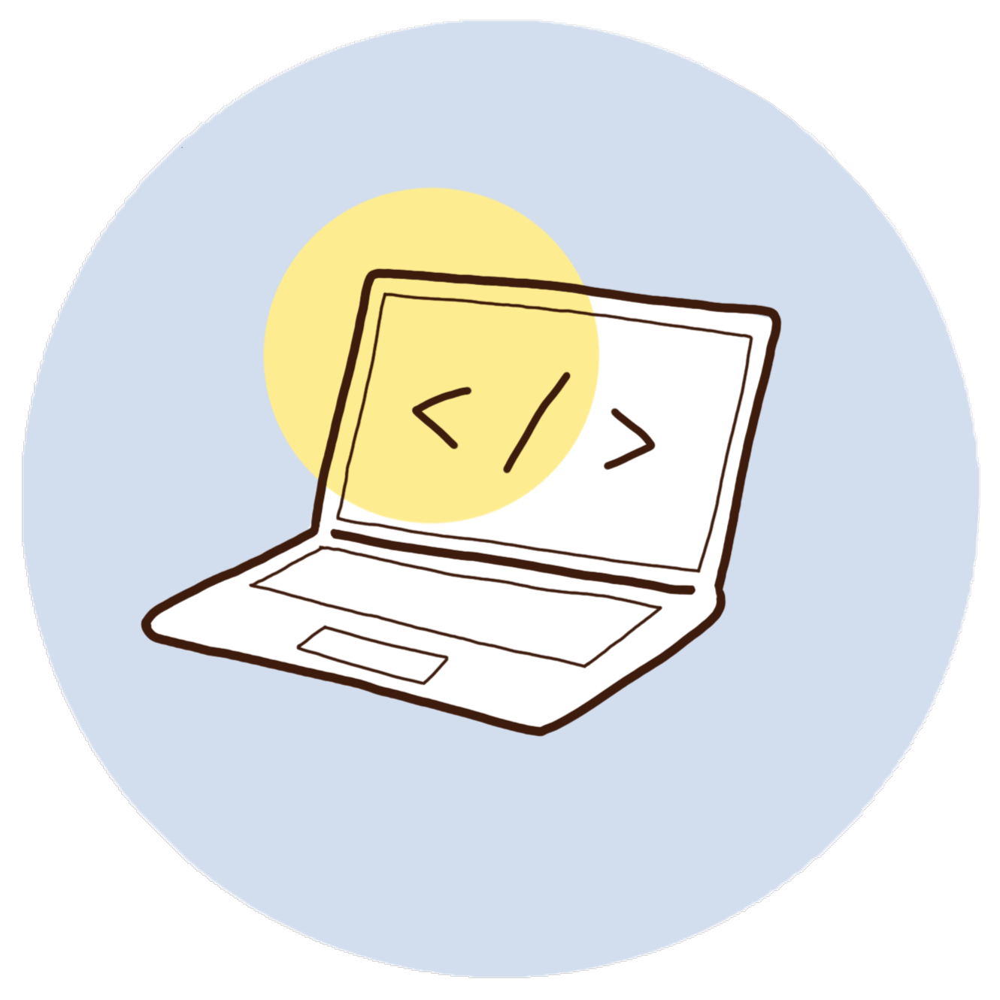
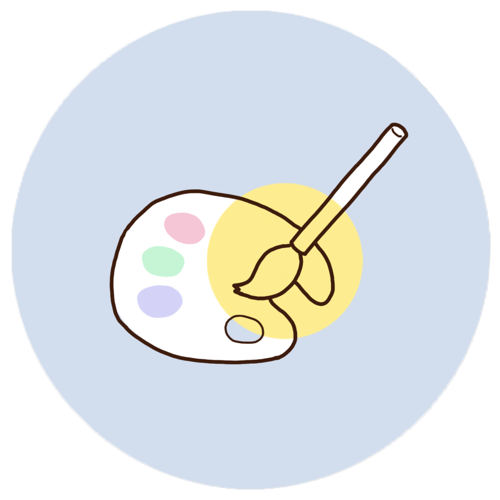
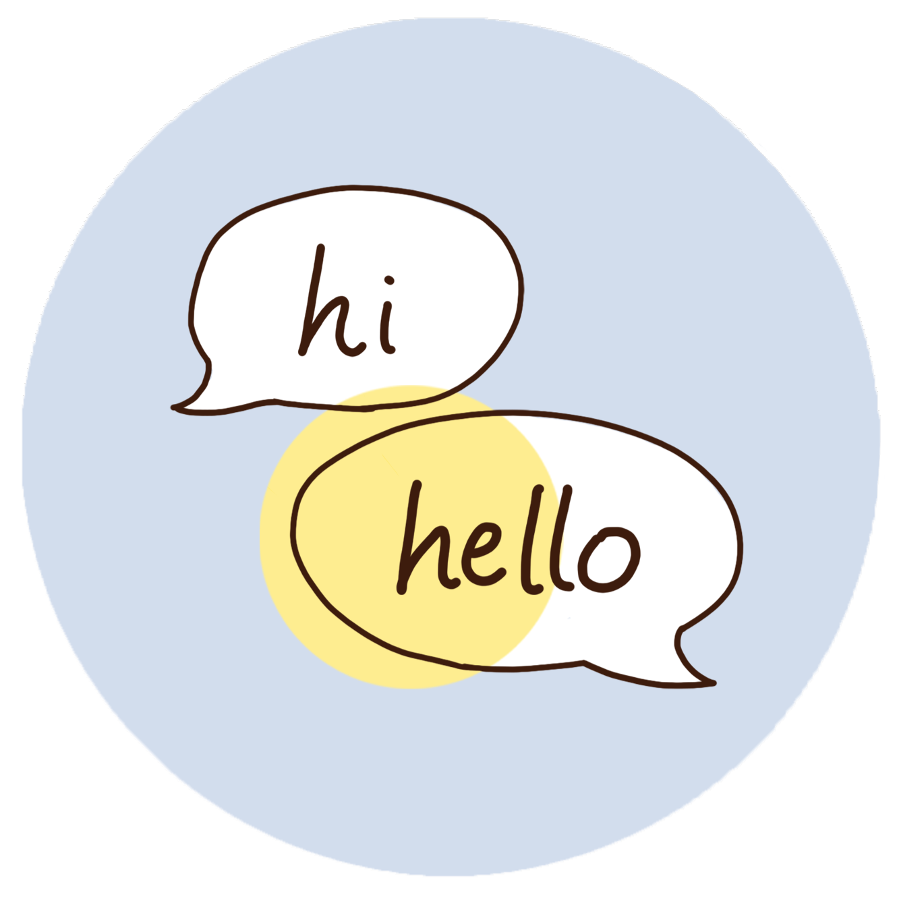

Rio Okamoto
岡本 里緒
埼玉県出身の24歳。
小さな頃から芸術に魅力を感じ、クリエイティビティを発揮することが好き。
明るく、穏やかな性格。仕事はとことん真面目に取り組む。
趣味は、旅行、音楽・映画鑑賞、カフェ巡り、動画編集など。
24歳になってすぐの頃にWebデザインの面白さに気づき、学習に励んでいる。
Biography
2000-1-23
埼玉県熊谷市に生まれる
幼い頃から絵を描くことが好きで、小学校では漫画制作や読書感想画、図工などを通して、表現の楽しさを知る。中学校では自分を表現したいという思いから合唱部に入部。高等学校では外国語学科に入学し、趣味として動画編集やDIYを通じてモノづくりを楽しむ。また、所属していた英語部の新入生向けの発表を企画し、前年の5倍以上の新入部員を迎えたことで、企画・制作に興味を持つ。
2018-4
拓殖大学 外国語学部に入学
多くの人と関わることで自分の世界を広げたいと考え、英米語学科に入学。授業で行ったグループでのCM制作において、企画・動画編集を担当。演劇ゼミに所属し、卒業作品の企画を行う。
2022-4
IT企業に就職
人の気持ちに共感できるという強みを活かして、顧客の不安を取り除くことのできる人材になりたいと思い、顧客サポートのできるIT企業に入社。顧客訪問や電話・メール対応を通じて、営業を経験する。もっと自分を表現できる仕事に就きたいと考え、退職。入社中、Web制作チームの社員と関わる中でWebデザインに興味を持つ。
現在
Webデザイナーを目指す
今年1月にProgateにてWeb開発コースを受講し、Webデザインの楽しさを知る。2月から1ヵ月間、テックアカデミーにてWebデザインの基礎を学ぶ。それ以降、独学で架空サイトとポートフォリオサイトを制作。より多くの知識や技術を身につけるため、転職活動を行いながら毎日学習に取り組む。
Skills

Coding
HTML, CSS, jQueryを用いて、デザインを的確に再現することができます。SaSSを利用して、効率よくコーディングをすることができます。レスポンシブサイトも制作することができます。
HTML / SCC / jQuery / SaSS

Design
特色を出すことに拘るだけでなく、ユーザーの視点に立って、容易に目的に辿り着くことのできるデザインを心掛けています。また、iPadを用いてイラストのデザインも行うことができます。
Photoshop / Figma / MediBang

English
高等学校から専門的に英語の学習を始め、大学でも専攻していたため、日常会話は問題なく行うことができます。高等学校3年次から1年間でTOEICのスコアを200点ほどあげることができました。
実用英語技能検定2級（高等学校3年次）
/ TOEIC L&Rテスト 775点（大学1年次）
Strength
創造力
今までの経験や知識から、新しいアイデアを一から創造することが得意です。
学生の頃から、自分を表現できるモノづくりに楽しさを見出し、漫画制作やCM制作など多くの作品の企画から制作までを行ってきました。
したがって、お客様の問題を解決するためのデザインや、構成を創造することができます。
共感力
コミュニケーションを通じて、相手の気持ちや考えを深く理解することができます。
日常生活の中でも、常に相手の立場に立って、気持ちを理解しようとしています。
これにより、お客様や同僚と円滑な人間関係を築いたり、お客様と一緒に課題を見つけることができます。
勤勉さ
目標を達成するために、懸命に物事に取り組むことができます。ルールをしっかり守り、効率を重視したうえで、積極的に目標に向かって行動します。
学生時代も授業に積極的に参加し、グループワークでは積極的に発言をしていました。目標達成のためにどんな問題があるのかを把握し、問題を解決するために必要な行動を考え実行していました。
この力は、Webデザインの仕事の場でも十分に発揮できます。
Things I like

旅行
将来の夢は
ヨーロッパ横断です。

愛猫
毎日2匹に癒されています。

カフェ巡り
埼玉のカフェを開拓中です。

音楽
10年ほど前から洋楽にどっぷりです。

キャンドル
好きな香りを見つけたらすぐに購入します。